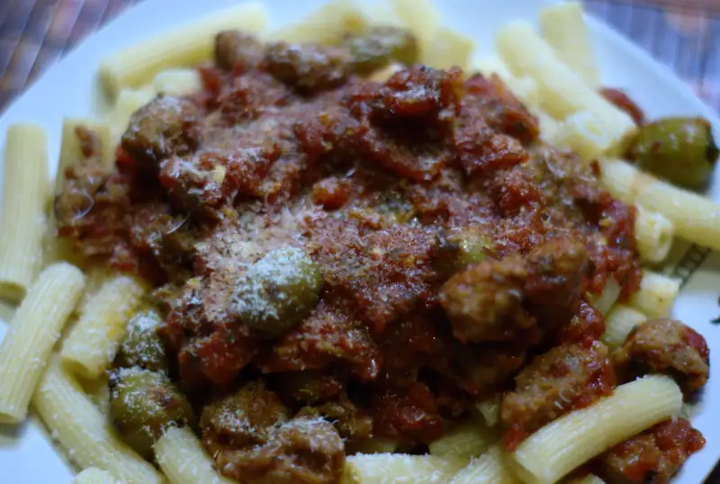

Pasta con salchicha italiana y salsa de tomate recetas


{kind=link}
Ya ni recuerdo de donde saqué la idea, pero probablemente fue de la tele o de internet, el caso es que esta receta probablemente es más tradicional que la de las albóndigas de res o puerco dada la no-refrigerada naturaleza de sus ingredientes.
Ingredientes
- 250 gr salchicha italiana
- 1/2 tz aceitunas, sin hueso
- ~ 250 gr pasta, cocida
- 1 lata mediana de tomate en cubos o triturado
- 1/2 cda orégano
- 1 hoja de laurel
- sal y pimienta al gusto
Procedimiento
- Pon los tomates en una olla pequeña a fuego lento
- Licúa los tomates con una licuadora de mano (o en una de vaso, también sirve)
- Cuece los tomates con el orégano, laurel y un poco de sal hasta que espese la salsa
- Ajusta el punto de sal de la salsa
- En un sartén grande dora la salchicha, quebrando los trozos lo más posible
- Agrega la pasta a la salchicha y saltea
- Agrega las aceitunas y salsa de tomate
- Sirve espolvoreando de parmesano rallado (que no.. del bote verde nooo)